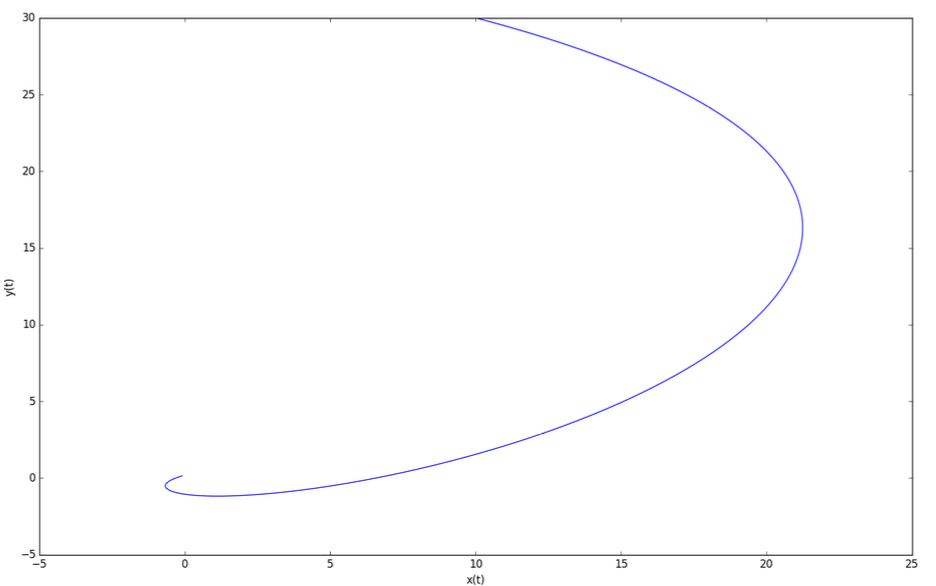

CSC2626 Imitation Learning for Robotics
Week 2: Introduction to Optimal Control & Model-Based RL
Today’s agenda
• Intro to Control & Reinforcement Learning
• Linear Quadratic Regulator (LQR)
• Iterative LQR
• Model Predictive Control
• Learning dynamics and model-based RL
\[ \begin{aligned} &\underset{\pi_0, \ldots, \pi_{T-1}}{\text{minimize}} \quad \mathbb{E}_{e_t} \left[ \sum_{t=0}^{T} c(\mathbf{x}_t, \mathbf{u}_t) \right] \\ &\text{subject to} \quad \mathbf{x}_{t+1} = f_t(\mathbf{x}_t, \mathbf{u}_t, e_t) \quad \color{red}{\text{known dynamics}} \\ &\qquad \qquad \quad \mathbf{u}_t = \pi_t(\mathbf{x}_{0:t}, \mathbf{u}_{0:t-1}) \\ &\qquad \qquad \qquad \qquad \qquad \color{red}{\text{control law / policy}} \end{aligned} \]
\[ \begin{aligned} &\underset{\theta}{\text{maximize}} \quad \mathbb{E}_{\tau \sim p_\theta(\tau)} \left[ \sum_{t=0}^{T} r(\mathbf{x}_t, \mathbf{a}_t) \right] \\ \\ &p_\theta(\tau) = p_\theta(\mathbf{x}_{0:T}, \mathbf{a}_{0:T-1}) \\ &\quad = p(\mathbf{x}_0) \prod_{t=1}^{T} \pi_\theta(\mathbf{a}_t | \mathbf{x}_t) p(\mathbf{x}_{t+1} | \mathbf{x}_t, \mathbf{u}_t) \\ &\qquad \qquad \qquad \color{red}{\text{policy}} \quad \color{red}{\text{dynamics}} \end{aligned} \]
cost = -reward
\[ J(\mathbf{x}_t) = \min_{\mathbf{u}_t} \left[ c(\mathbf{x}_t, \mathbf{u}_t) + \mathbb{E}_{e_t} \left[ J(f_t(\mathbf{x}_t, \mathbf{u}_t, e_t)) \right] \right] \]
\(\color{red}\uparrow\)
Optimal cost-to-go:
“if you land at state x and you follow the optimal actions what is the expected cost you will pay?”
\[ \textcolor{red}{\swarrow \text{For finite time horizon} \searrow} \]
\[ J(\mathbf{x}_t) = \min_{\mathbf{u}_t} \left[ c(\mathbf{x}_t, \mathbf{u}_t) + \mathbb{E}_{e_t} \left[ J(f_t(\mathbf{x}_t, \mathbf{u}_t, e_t)) \right] \right] \]
\(\qquad \uparrow\)
Optimal cost-to-go
\[ V^*(\mathbf{x}_t) = \max_{\mathbf{a}_t} \left[ r(\mathbf{x}_t, \mathbf{a}_t) + \mathbb{E}_{\mathbf{x}_{t+1} \sim p(\mathbf{x}_{t+1}|\mathbf{x}_t, \mathbf{a}_t)} \left[ V^*(\mathbf{x}_{t+1}) \right] \right] \]
\(\uparrow\)
Optimal value function:
“if you land at state x and you follow the optimal policy
what is the expected reward you will accumulate?”
\[ \textcolor{red}{\swarrow \text{For finite time horizon} \searrow} \]
\[ J(\mathbf{x}_t) = \min_{\mathbf{u}_t} \left[ c(\mathbf{x}_t, \mathbf{u}_t) + \mathbb{E}_{e_t} \left[ J(f_t(\mathbf{x}_t, \mathbf{u}_t, e_t)) \right] \right] \]
\(\qquad \uparrow\)
Optimal cost-to-go
\[ V^*(\mathbf{x}_t) = \max_{\mathbf{a}_t} \underbrace{\left[ r(\mathbf{x}_t, \mathbf{a}_t) + \mathbb{E}_{\mathbf{x}_{t+1} \sim p(\mathbf{x}_{t+1}|\mathbf{x}_t, \mathbf{a}_t)} \left[ V^*(\mathbf{x}_{t+1}) \right] \right]}_{Q^*(x_t, a_t)} \]
\(\uparrow\)
Optimal value function
\(\qquad \qquad \qquad \uparrow\)
Optimal state-action value function:
“if you land at state x, and you commit
to first execute action a, and then
follow the optimal policy how much
reward will you accumulate?”
\[ \textcolor{red}{\swarrow \text{For finite time horizon} \searrow} \]
\[ J(\mathbf{x}_t) = \min_{\mathbf{u}_t} \left[ c(\mathbf{x}_t, \mathbf{u}_t) + \mathbb{E}_{e_t} \left[ J(f_t(\mathbf{x}_t, \mathbf{u}_t, e_t)) \right] \right] \]
\(\qquad \uparrow\)
Optimal cost-to-go
\[ V^*(\mathbf{x}_t) = \max_{\mathbf{a}_t} \left[ r(\mathbf{x}_t, \mathbf{a}_t) + \mathbb{E}_{\mathbf{x}_{t+1} \sim p(\mathbf{x}_{t+1}|\mathbf{x}_t, \mathbf{a}_t)} \left[ V^*(\mathbf{x}_{t+1}) \right] \right] \]
\(\uparrow\)
Optimal value function
Value function of policy pi: “if you land at state x and you follow policy pi what is the expected reward you will accumulate?”
\(\downarrow\)
\[ V^\pi(\mathbf{x}_t) = \mathbb{E}_{\mathbf{a}_t \sim \pi(\mathbf{a}|\mathbf{x}_t)} \left[ r(\mathbf{x}_t, \mathbf{a}_t) + \mathbb{E}_{\mathbf{x}_{t+1} \sim p(\mathbf{x}_{t+1}|\mathbf{x}_t, \mathbf{a}_t)} \left[ V^\pi(\mathbf{x}_{t+1}) \right] \right] \]
\[ \textcolor{red}{\swarrow \text{For finite time horizon} \searrow} \]
\[ J(\mathbf{x}_t) = \min_{\mathbf{u}_t} \left[ c(\mathbf{x}_t, \mathbf{u}_t) + \mathbb{E}_{e_t} \left[ J(f_t(\mathbf{x}_t, \mathbf{u}_t, e_t)) \right] \right] \]
\(\qquad \uparrow\)
Optimal cost-to-go
\[ V^*(\mathbf{x}_t) = \max_{\mathbf{a}_t} \left[ r(\mathbf{x}_t, \mathbf{a}_t) + \mathbb{E}_{\mathbf{x}_{t+1} \sim p(\mathbf{x}_{t+1}|\mathbf{x}_t, \mathbf{a}_t)} \left[ V^*(\mathbf{x}_{t+1}) \right] \right] \]
\(\uparrow\)
Optimal value
function
Value function
of policy pi
\(\downarrow\)
\[ V^\pi(\mathbf{x}_t) = \mathbb{E}_{\mathbf{a}_t \sim \pi(\mathbf{a}|\mathbf{x}_t)} \overbrace{\left[ r(\mathbf{x}_t, \mathbf{a}_t) + \mathbb{E}_{\mathbf{x}_{t+1} \sim p(\mathbf{x}_{t+1}|\mathbf{x}_t, \mathbf{a}_t)} \left[ V^\pi(\mathbf{x}_{t+1}) \right] \right]}^{Q^{\pi} (x_t, a_t)} \]
State-action value function of policy pi:
“if you land at state x, and you commit
to first execute action a, and then follow
policy pi how much reward will you
accumulate?”
\[ \textcolor{red}{\swarrow \text{For finite time horizon} \searrow} \]
\[ J(\mathbf{x}_t) = \min_{\mathbf{u}_t} \left[ c(\mathbf{x}_t, \mathbf{u}_t) + \mathbb{E}_{e_t} \left[ J(f_t(\mathbf{x}_t, \mathbf{u}_t, e_t)) \right] \right] \]
\(\qquad \uparrow\)
Optimal cost-to-go
\[ V^*(\mathbf{x}_t) = \max_{\mathbf{a}_t} \underbrace{\left[ r(\mathbf{x}_t, \mathbf{a}_t) + \mathbb{E}_{\mathbf{x}_{t+1} \sim p(\mathbf{x}_{t+1}|\mathbf{x}_t, \mathbf{a}_t)} \left[ V^*(\mathbf{x}_{t+1}) \right] \right]}_{Q^*(x_t, a_t)} \]
\(\uparrow\)
Optimal value
function
Optimal state-action
value function
Value function
of policy pi
\(\downarrow\)
\[ V^\pi(\mathbf{x}_t) = \mathbb{E}_{\mathbf{a}_t \sim \pi(\mathbf{a}|\mathbf{x}_t)} \overbrace{\left[ r(\mathbf{x}_t, \mathbf{a}_t) + \mathbb{E}_{\mathbf{x}_{t+1} \sim p(\mathbf{x}_{t+1}|\mathbf{x}_t, \mathbf{a}_t)} \left[ V^\pi(\mathbf{x}_{t+1}) \right] \right]}^{Q^{\pi} (x_t, a_t)} \]
State-action value
function of policy pi
Today’s agenda
• Intro to Control & Reinforcement Learning
• Linear Quadratic Regulator (LQR)
• Iterative LQR
• Model Predictive Control
• Learning dynamics and model-based RL
What you can do with (variants of) LQR control
What you can do with (variants of) LQR control
Pieter Abbeel, Helicopter Aerobatics
LQR: assumptions
• You know the dynamics model of the system
• It is linear: \(\mathbf{x}_{t+1} = A\mathbf{x}_t + B\mathbf{u}_t\)
\(\qquad \qquad \qquad \qquad \uparrow\)
State at the next time step
\[ \mathbb{R}^d \]
\[ A \in \mathbb{R}^{d \times d} \]
\(\qquad \uparrow\)
Control / command / action applied to the system
\[ \mathbb{R}^k \]
\[ B \in \mathbb{R}^{d \times k} \]
Which systems are linear?
✓ • Omnidirectional robot
\[ \begin{align} x_{t+1} &= x_t + v_x(t)\delta t \\ y_{t+1} &= y_t + v_y(t)\delta t \\ \theta_{t+1} &= \theta_t + \omega_z(t)\delta t \end{align} \quad \Rightarrow \quad \]
\[ \mathbf{x}_{t+1} = I\mathbf{x}_t + \delta t I \mathbf{u}_t \] \[ \begin{align} A &= I \\ B &= \delta t I \end{align} \]
X • Simple Car
\[ \begin{align} x_{t+1} &= x_t + v_x(t)\cos(\theta_t)\delta t \\ y_{t+1} &= y_t + v_x(t)\sin(\theta_t)\delta t \\ \theta_{t+1} &= \theta_t + \omega_z\delta t \end{align} \quad \Rightarrow \quad \]
\[ \mathbf{x}_{t+1} = I\mathbf{x}_t + \begin{bmatrix} \delta t\cos(\theta_t) & 0 & 0 \\ 0 & \delta t\sin(\theta_t) & 0 \\ 0 & 0 & \delta t \end{bmatrix} \mathbf{u}_t \] \[ \begin{align} A &= I \\ B &= B(x_t) \\ \end{align} \]
The goal of LQR
If we want to stabilize around \(x^*\) then let \(x\) – \(x^*\) be the state
\(\downarrow\)
• Stabilize the system around state \(x_t = 0\) with control \(u_t = 0\)
• Then \(x_{t+1} = 0\) and the system will remain at zero forever
LQR: assumptions
• You know the dynamics model of the system
• It is linear: \(\mathbf{x}_{t+1} = Ax_t + Bu_t\)
• There is an instantaneous cost associated with being at state \(x_t\) and taking the action : \(\mathbf{u}_t: c(\mathbf{x}_t, \mathbf{u}_t) = \mathbf{x}_t^T Q \mathbf{x}_t + \mathbf{u}_t^T R \mathbf{u}_t\)
\(\color{red}\uparrow\)
Quadratic state cost: Penalizes deviation from the zero vector
\(\color{red}\nwarrow\)
Quadratic control cost: Penalizes high control signals
\(\color{red}\uparrow\)
\(\color{red}\nearrow\)
Square matrices Q and R must be positive definite:
\(Q = Q^T\) and \(\forall x, x^T Q x > 0\)
\(R = R^T\) and \(\forall u, u^T R u > 0\)
i.e. positive cost for ANY nonzero state and control vector
Finite-Horizon LQR
• Idea: finding controls is an optimization problem
• Compute the control variables that minimize the cumulative cost
\[ \begin{align} u_0^*, \ldots, u_{N-1}^* &= argmin_{u_0, \ldots, u_N} \sum_{t=0}^{N} c(\mathbf{x}_t, \mathbf{u}_t) \\ &\text{s.t.} \\ \mathbf{x}_1 &= A\mathbf{x}_0 + B\mathbf{u}_0 \\ \mathbf{x}_2 &= A\mathbf{x}_1 + B\mathbf{u}_1 \\ &\vdots \\ \mathbf{x}_N &= A\mathbf{x}_{N-1} + B\mathbf{u}_{N-1} \end{align} \]
We could solve this as a constrained nonlinear optimization problem. But, there is a better way: we can find a closed-form solution.
Open-loop plan!
Given first state compute action sequence
Finding the LQR controller in closed-form by recursion
• Let \(J_n(x)\) denote the cumulative cost-to-go starting from state x and moving for n time steps.
• I.e. cumulative future cost from now till n more steps
• \(J_0(x) = x^TQx\) is the terminal cost of ending up at state x, with no actions left to perform. Recall that \(c(x, u) = x^TQx + \cancel{\mathbf{u}^T R \mathbf{u}}\)
Q: What is the optimal cumulative cost-to-go function with 1 time step left?
Finding the LQR controller in closed-form by recursion
\(J_0(x) = x^TQx\)
For notational convenience later on
\[\begin{align} J_1(\mathbf{x}) &= \min_{\mathbf{u}} \underbrace{[\mathbf{x}^T Q \mathbf{x} + \mathbf{u}^T R \mathbf{u} + J_0(A\mathbf{x} + B\mathbf{u})]}_{\color{red}\textbf{In RL this would be the state-action value function}} \\ \end{align}\]
Bellman Update
Dynamic Programming Value Iteration
Finding the LQR controller in closed-form by recursion
\(J_0(x) = x^TQx\)
\[\begin{align} J_1(\mathbf{x}) &= \min_{\mathbf{u}} [\mathbf{x}^T Q \mathbf{x} + \mathbf{u}^T R \mathbf{u} + J_0(A\mathbf{x} + B\mathbf{u})] \\ &= \min_{\mathbf{u}} [\mathbf{x}^T Q \mathbf{x} + \mathbf{u}^T R \mathbf{u} + (A\mathbf{x} + B\mathbf{u})^T P_0 (A\mathbf{x} + B\mathbf{u})] \end{align}\]
Q: How do we optimize a multivariable function with respect to some variables (in our case, the controls)?
Finding the LQR controller in closed-form by recursion
\(J_0(x) = x^TQx\)
\[\begin{align} J_1(\mathbf{x}) &= \min_{\mathbf{u}} [\mathbf{x}^T Q \mathbf{x} + \mathbf{u}^T R \mathbf{u} + J_0(A\mathbf{x} + B\mathbf{u})] \\ &= \min_{\mathbf{u}} [\mathbf{x}^T Q \mathbf{x} + \mathbf{u}^T R \mathbf{u} + (A\mathbf{x} + B\mathbf{u})^T P_0 (A\mathbf{x} + B\mathbf{u})] \\ &= \mathbf{x}^T Q \mathbf{x} + \min_{\mathbf{u}} [\mathbf{u}^T R \mathbf{u} + (A\mathbf{x} + B\mathbf{u})^T P_0 (A\mathbf{x} + B\mathbf{u})] \end{align}\]
Finding the LQR controller in closed-form by recursion
\(J_0(x) = x^TQx\)
\[\begin{align} J_1(\mathbf{x}) &= \min_{\mathbf{u}} [\mathbf{x}^T Q \mathbf{x} + \mathbf{u}^T R \mathbf{u} + J_0(A\mathbf{x} + B\mathbf{u})] \\ &= \min_{\mathbf{u}} [\mathbf{x}^T Q \mathbf{x} + \mathbf{u}^T R \mathbf{u} + (A\mathbf{x} + B\mathbf{u})^T P_0 (A\mathbf{x} + B\mathbf{u})] \\ &= \mathbf{x}^T Q \mathbf{x} + \min_{\mathbf{u}} [\mathbf{u}^T R \mathbf{u} + (A\mathbf{x} + B\mathbf{u})^T P_0 (A\mathbf{x} + B\mathbf{u})] \\ &= \mathbf{x}^T Q \mathbf{x} + \mathbf{x}^T A^T P_0 A\mathbf{x} + \min_{\mathbf{u}} [\mathbf{u}^T R \mathbf{u} + 2\mathbf{u}^T B^T P_0 A\mathbf{x} + \mathbf{u}^T B^T P_0 B\mathbf{u}] \end{align}\]
\(\uparrow\)
Quadratic
term in u
\(\uparrow\)
Linear
term in u
\(\uparrow\)
Quadratic
term in u
A: Take the partial derivative w.r.t. controls and set it to zero. That will give you a critical point.
Finding the LQR controller in closed-form by recursion
\[\begin{align} J_1(\mathbf{x}) &= \mathbf{x}^T Q \mathbf{x} + \mathbf{x}^T A^T P_0 A\mathbf{x} + \min_{\mathbf{u}} [\mathbf{u}^T R \mathbf{u} + 2\mathbf{u}^T B^T P_0 A\mathbf{x} + \mathbf{u}^T B^T P_0 B\mathbf{u}] \end{align}\]
The minimum is attained at:
\(2Ru + 2B^T P_0 Ax + 2B^T P_0 Bu = \mathbf{0}\) \((R + B^T P_0 B)\mathbf{u} = -B^T P_0 Ax\)
\(\color{red}\uparrow\)
Q: Is this matrix invertible? Recall R, Po are positive definite matrices.
\(R + B^T P_0 B\) is positive definite, so it is invertible
From calculus/algebra:
\(\frac{\partial}{\partial u}(u^T M u) = (M + M^T)u\)
\(\frac{\partial}{\partial u}(u^T M b) = M^T b\)
If M is symmetric:
\(\frac{\partial}{\partial u}(u^T M u) = 2Mu\)
Finding the LQR controller in closed-form by recursion
\[\begin{align} J_1(\mathbf{x}) &= \mathbf{x}^T Q \mathbf{x} + \mathbf{x}^T A^T P_0 A\mathbf{x} + \min_{\mathbf{u}} [\mathbf{u}^T R \mathbf{u} + 2\mathbf{u}^T B^T P_0 A\mathbf{x} + \mathbf{u}^T B^T P_0 B\mathbf{u}] \end{align}\]
The minimum is attained at:
\(2Ru + 2B^T P_0 Ax + 2B^T P_0 Bu = \mathbf{0}\) \((R + B^T P_0 B)\mathbf{u} = -B^T P_0 Ax\)
So, the optimal control for the last time step is:
\(\mathbf{u} = -(R + B^T P_0 B)^{-1} B^T P_0 Ax\)
\(\mathbf{u} = K_1 \mathbf{x}\)
Linear controller in terms of the state
We computed the location of the minimum. Now, plug it back in and compute the minimum value
Finding the LQR controller in closed-form by recursion
\(J_0(x) = x^TQx\) \[\begin{align} J_1(\mathbf{x}) &= \mathbf{x}^T Q \mathbf{x} + \mathbf{x}^T A^T P_0 A\mathbf{x} + \min_{\mathbf{u}} [\mathbf{u}^T R \mathbf{u} + 2\mathbf{u}^T B^T P_0 A\mathbf{x} + \mathbf{u}^T B^T P_0 B\mathbf{u}] \\ &= \mathbf{x}^T \underbrace{Q + K_1^T R K_1 + (A + B K_1)^T P_0 (A + B K_1)}_{P_1} \mathbf{x} \end{align}\]
Q: Why is this a big deal?
A: The cost-to-go function remains quadratic after the first recursive step.
Finding the LQR controller in closed-form by recursion
Finite-Horizon LQR: algorithm summary
\(P_0 = Q\)
// n is the # of steps left
Potential problem for states of dimension >> 100:
Matrix inversion is expensive: O(k^2.3) for the best known algorithm and O(k^3) for Gaussian Elimination.
\(\swarrow\)
for n = 1…N
\(K_n = -(R + B^T P_{n-1} B)^{-1} B^T P_{n-1} A\)
\(P_n = Q + K_n^T R K_n + (A + B K_n)^T P_{n-1} (A + B K_n)\)
One pass backward in time:
Matrix gains are precomputed based on the dynamics and the instantaneous cost
Optimal control for time t = N – n is \(\mathbf{u}_t = K_t \mathbf{x}_t\) with cost-to-go \(J_t(\mathbf{x}) = \mathbf{x}^T P_t \mathbf{x}\) where the states are predicted forward in time according to linear dynamics
One pass forward in time:
Predict states, compute controls and cost-to-go
LQR: general form of dynamics and cost functions
Even though we assumed
we can also accommodate
\(\mathbf{x}_{t+1} = A \mathbf{x}_t + B \mathbf{u}_t\)
\(\mathbf{x}_{t+1} = A_t \mathbf{x}_t + B_t \mathbf{u}_t + \mathbf{b}_t\)
\(c(\mathbf{x}_t, \mathbf{u}_t) = \mathbf{x}_t^T Q \mathbf{x}_t + \mathbf{u}_t^T R \mathbf{u}_t\)
\(c(\mathbf{x}_t, \mathbf{u}_t) = \begin{bmatrix} \mathbf{x}_t \\ \mathbf{u}_t \end{bmatrix}^T H_t \begin{bmatrix} \mathbf{x}_t \\ \mathbf{u}_t \end{bmatrix} + \begin{bmatrix} \mathbf{x}_t \\ \mathbf{u}_t \end{bmatrix}^T \mathbf{h}_t\)
but the form of the computed controls becomes \(\mathbf{u}_{t} = K_t \mathbf{x}_t + \mathbf{k}_t\)
LQR with stochastic dynamics
Assume \(\mathbf{x}_{t+1} = A_t \mathbf{x}_t + B_t \mathbf{u}_t + \mathbf{w}_t\) and \(c(\mathbf{x}_t, \mathbf{u}_t) = \mathbf{x}_t^T Q \mathbf{x}_t + \mathbf{u}_t^T R \mathbf{u}_t\)
\(\uparrow\) zero mean Gaussian
Then the form of the optimal policy is the same as in LQR \(\mathbf{u}_{t} = K_t \mathbf{x}_t + \mathbf{k}_t\)
No need to change the algorithm, as long as you observe the state at each step (closed-loop policy)
Linear Quadratic Gaussian LQG
LQR summary
- Advantages:
- If system is linear LQR gives the optimal controller that takes the system’s state to 0 (or the desired target state, same thing)
Drawbacks:
- Linear dynamics
- How can you include obstacles or constraints in the specification?
- Not easy to put bounds on control values
Today’s agenda
• Intro to Control & Reinforcement Learning
• Linear Quadratic Regulator (LQR)
• Iterative LQR
• Model Predictive Control
• Learning dynamics and model-based RL
What happens in the general nonlinear case?
\[ u_0^*, \ldots, u_{N-1}^* = \arg\min_{u_0, \ldots, u_N} \sum_{t=0}^{N} c(x_t, u_t) \] \[ \begin{aligned} \mathbf{x}_1 &= f(\mathbf{x}_0, \mathbf{u}_0) \\ \mathbf{x}_2 &= f(\mathbf{x}_1, \mathbf{u}_1) \\ &\vdots \\ \mathbf{x}_N &= f(\mathbf{x}_{N-1}, \mathbf{u}_{N-1}) \end{aligned} \]
Arbitrary differentiable functions c, f
Idea: iteratively approximate solution by solving linearized versions of the problem via LQR
Iterative LQR (iLQR)
Given an initial sequence of states \(\bar{x}_0, \ldots, \bar{x}_N\) and actions \(\bar{u}_0, \ldots, \bar{u}_N\):
Linearize Dynamics
\[ f(x_t, u_t) \approx \tilde{f}(\delta x_t, \delta u_t) = \underbrace{f(\bar{x}_t, \bar{u}_t)}_{\mathbf{b}_t} + \underbrace{\frac{\partial f}{\partial x} (\bar{x}_t, \bar{u}_t)}_{A_t}\underbrace{(x_t - \bar{x}_t)}_{\delta x_t} + \underbrace{\frac{\partial f}{\partial u} (\bar{x}_t, \bar{u}_t)}_{B_t}\underbrace{(u_t - \bar{u}_t)}_{\delta \mathbf{u}_t} \]
Taylor Expand Cost
\[ c(x_t, u_t) \approx \tilde{c}(\delta x_t, \delta u_t) = c(\bar{x}_t, \bar{u}_t) + \underbrace{\nabla_{x,u} c(\bar{x}_t, \bar{u}_t)}_{\mathbf{h}_t} \begin{bmatrix} x_t - \bar{x}_t \\ u_t - \bar{u}_t \end{bmatrix} + \frac{1}{2} \begin{bmatrix} x_t - \bar{x}_t \\ u_t - \bar{u}_t \end{bmatrix}^T \underbrace{\nabla^2_{x,u} c(\bar{x}_t, \bar{u}_t)}_{H_t} \begin{bmatrix} x_t - \bar{x}_t \\ u_t - \bar{u}_t \end{bmatrix} \]
Use LQR Backward Pass on the approximate dynamics \(f(\delta x_t, \delta u_t)\) and cost \(\tilde{c}(\delta x_t, \delta u_t)\)
Do a forward pass to get \(\delta u_t\) and \(\delta x_t\) and update state and action sequence and \(\bar{x}_0, \ldots, \bar{x}_N\) and \(\bar{u}_0, \ldots, \bar{u}_N\)
Iterative LQR: convergence & tricks
• New state and action sequence in iLQR is not guaranteed to be close to the linearization point (so linear approximation might be bad)
• Trick: try to penalize magnitude of \(\delta u_t\) and \(\delta x_t\)
Replace old LQR linearized cost with \((1 - \alpha) \, \tilde{c}(\delta \mathbf{x}_t, \delta \mathbf{u}_t) + \alpha \left( \| \delta \mathbf{x}_t \|^2 + \| \delta \mathbf{u}_t \|^2 \right)\)
• Problem: Can get stuck in local optima, need to initialize well
• Problem: Hessian might not be positive definite
Today’s agenda
• Intro to Control & Reinforcement Learning
• Linear Quadratic Regulator (LQR)
• Iterative LQR
• Model Predictive Control
• Learning dynamics and model-based RL
Open loop vs. closed loop
• The instances of LQR and iLQR that we saw were open-loop
• Commands are executed in sequence, without feedback
• Idea: what if we throw away all commands except the first
• We can execute the first command, and then replan Takes into account the changing state
Model Predictive Control
while True:
observe the current state \(x_0\)
run LQR/iLQR or LQG/iLQG or other planner to get \({u}_0, \ldots, {u}_{N-1}\)
Execute \(u_0\)
Possible speedups:
- Don’t plan too far ahead with LQR
- Execute more than one planned action
- Warm starts and initialization
- Use faster / custom optimizer (e.g. CPLEX, sequential quadratic programming)
Online trajectory optimization / MPC
Online trajectory optimization / MPC
Online trajectory optimization / MPC
Test 3: Dynamic Maneuvers
Online trajectory optimization / MPC
Today’s agenda
• Intro to Control & Reinforcement Learning
• Linear Quadratic Regulator (LQR)
• Iterative LQR
• Model Predictive Control
• Learning dynamics and model-based RL
Learning a dynamics model
Idea #1: Collect dataset \(D = \{(x_t, u_t, x_{t+1})\}\)
do supervised learning to minimize \(\sum_{t} \left\| f_{\theta}(x_t, u_t) - x_{t+1} \right\|^2\)
and then use the learned model for planning
Possibly a better idea: instead of minimizing single-step prediction errors, minimize multi-step errors.
See “Improving Multi-step Prediction of Learned Time Series Models” by Venkatraman, Hebert, Bagnell
Possibly a better idea: instead of predicting next state predict next change in state.
See “PILCO: A Model-Based and Data-Efficient Approach to Policy Search” by Deisenroth, Rasmussen
Model-based RL
Collect initial dataset \(D = \{(x_t, u_t, x_{t+1})\}\)
Fit dynamics model \(f_{\theta}(x_t, u_t)\)
Plan through \(f_{\theta}(x_t, u_t)\) to get actions
Execute first action, observe new state \(x_{t+1}\)
Append \((x_t, u_t, x_{t+1})\) to \(D\)
Today’s agenda
• Intro to Control & Reinforcement Learning
• Linear Quadratic Regulator (LQR)
• Iterative LQR
• Model Predictive Control
• Learning dynamics and model-based RL
• Appendix
Appendix #1 (optional reading) LQR extensions: time-varying systems
• What can we do when \(x_{t+1} = A_t x_t + B_t u_t\) and \(c(x_t, u_t) = x_t^T Q x_t + u_t^T R u_t\) ?
• Turns out, the proof and the algorithm are almost the same
\(P_0 = Q_N\)
// n is the # of steps left
for n = 1…N
\(K_n = -\left(R_{N-n} + B_{N-n}^T P_{n-1} B_{N-n}\right)^{-1} B_{N-n}^T P_{n-1} A_{N-n}\)
\(P_n = Q_{N-n} + K_n^T R_{N-n} K_n + (A_{N-n} + B_{N-n} K_n)^T P_{n-1} (A_{N-n} + B_{N-n} K_n)\)
Optimal controller for n-step horizon is \(u_n = K_n x_n\) with cost-to-go \(J_n(x) = x^T P_n x\)
Appendix #2 (optional reading) Why not use PID control?
• We could, but:
• The gains for PID are good for a small region of state-space.
• System reaches a state outside this set → becomes unstable
• PID has no formal guarantees on the size of the set
• We would need to tune PID gains for every control variable.
• If the state vector has multiple dimensions it becomes harder to tune every control variable in isolation. Need to consider interactions and correlations.
• We would need to tune PID gains for different regions of the state-space and guarantee smooth gain transitions
• This is called gain scheduling, and it takes a lot of effort and time
LQR addresses these problems
Appendix #3 (optional reading) Examples of models and solutions with LQR
LQR example #1: omnidirectional vehicle with friction
• Similar to double integrator dynamical system, but with friction:
\[ \underset{\color{red}\text{Force applied to the vehicle}}{\underline{m\ddot{p}}} = \underset{\color{red}\text{Control applied to the vehicle}}{\underline{\mathbf{u}}} - \underset{\color{red}\text{Friction opposed to motion}}{\underline{\alpha \dot{p}}} \]
LQR example #1: omnidirectional vehicle with friction
• Similar to double integrator dynamical system, but with friction:
\[ m\ddot{p} = \mathbf{u} - \alpha \dot{p} \]
• Set \(\dot{p} = v\) and then you get:
\[ m\dot{v} = \mathbf{u} - \alpha \mathbf{v} \]
• We discretize by setting
\[ \frac{\mathbf{p}_{t+1} - \mathbf{p}_t}{\delta t} \simeq \mathbf{v}_t \]
\[ m \frac{\mathbf{v}_{t+1} - \mathbf{v}_t}{\delta t} \simeq \mathbf{u}_t - \alpha \mathbf{v}_t \]
LQR example #1: omnidirectional vehicle with friction
\[ \frac{\mathbf{p}_{t+1} - \mathbf{p}_t}{\delta t} \simeq \mathbf{v}_t \]
\[ m \frac{\mathbf{v}_{t+1} - \mathbf{v}_t}{\delta t} \simeq \mathbf{u}_t - \alpha \mathbf{v}_t \]
• Define the state vector \(\mathbf{x}_t = \begin{bmatrix}\mathbf{p}_t \\\mathbf{v}_t\end{bmatrix}\)
Q: How can we express this as a linear system?
\[ \mathbf{x}_{t+1} = \begin{bmatrix} \mathbf{p}_{t+1} \\ \mathbf{v}_{t+1} \end{bmatrix} = \begin{bmatrix} \mathbf{p}_t + \delta t \mathbf{v}_t \\ \mathbf{v}_t + \frac{\delta t}{m} \mathbf{u}_t - \frac{\alpha \delta t}{m} \mathbf{v}_t \end{bmatrix} = \begin{bmatrix} p_t + \delta t v_t \\ v_t - \frac{\alpha \delta t}{m} \mathbf{v}_t \end{bmatrix} + \begin{bmatrix} 0 & 0 \\ 0 & 0 \\ \frac{\delta t}{m} & 0 \\ 0 & \frac{\delta t}{m} \end{bmatrix} \mathbf{u}_t \]
LQR example #1: omnidirectional vehicle with friction
\[ \frac{\mathbf{p}_{t+1} - \mathbf{p}_t}{\delta t} \simeq \mathbf{v}_t \]
\[ m \frac{\mathbf{v}_{t+1} - \mathbf{v}_t}{\delta t} \simeq \mathbf{u}_t - \alpha \mathbf{v}_t \]
• Define the state vector \(\mathbf{x}_t = \begin{bmatrix}\mathbf{p}_t \\\mathbf{v}_t\end{bmatrix}\)
\[ \mathbf{x}_{t+1} = \begin{bmatrix} p_{t+1} \\ v_{t+1} \end{bmatrix} = \begin{bmatrix} p_t + \delta t v_t \\ v_t + \frac{\delta t}{m} u_t - \frac{\alpha \delta t}{m} v_t \end{bmatrix} = \underbrace{\begin{bmatrix} 1 & 0 & \delta t & 0 \\ 0 & 1 & 0 & \delta t \\ 0 & 0 & 1 - \alpha \delta t/m & 0 \\ 0 & 0 & 0 & 1 - \alpha \delta t/m \end{bmatrix}}_{\color{red}A} \mathbf{x}_t + \underbrace{\begin{bmatrix} 0 & 0 \\ 0 & 0 \\ \frac{\delta t}{m} & 0 \\ 0 & \frac{\delta t}{m} \end{bmatrix}}_{\color{red}B}\mathbf{u}_t \]
LQR example #1: omnidirectional vehicle with friction
• Define the state vector \(\mathbf{x}_t = \begin{bmatrix}\mathbf{p}_t \\\mathbf{v}_t\end{bmatrix}\)
\[ \mathbf{x}_{t+1} = \begin{bmatrix} p_{t+1} \\ v_{t+1} \end{bmatrix} = \begin{bmatrix} p_t + \delta t v_t \\ v_t + \frac{\delta t}{m} u_t - \frac{\alpha \delta t}{m} v_t \end{bmatrix} = \underbrace{\begin{bmatrix} 1 & 0 & \delta t & 0 \\ 0 & 1 & 0 & \delta t \\ 0 & 0 & 1 - \alpha \delta t/m & 0 \\ 0 & 0 & 0 & 1 - \alpha \delta t/m \end{bmatrix}}_{\color{red}A} \mathbf{x}_t + \underbrace{\begin{bmatrix} 0 & 0 \\ 0 & 0 \\ \frac{\delta t}{m} & 0 \\ 0 & \frac{\delta t}{m} \end{bmatrix}}_{\color{red}B}\mathbf{u}_t \]
• Define the instantaneous cost function
\[ \begin{aligned} c(\mathbf{x}, \mathbf{u}) = \mathbf{x}^T Q \mathbf{x} + \mathbf{u}^T R \mathbf{u} \\ = \mathbf{x}^T \mathbf{x} + \rho \mathbf{u}^T \mathbf{u} \\ = \|\mathbf{x}\|^2 + \rho \|\mathbf{u}\|^2 \end{aligned} \]
LQR example #1: omnidirectional vehicle with friction
With initial state \(\mathbf{x}_0 = \begin{bmatrix}10 \\ 30\\ 10\\ -5\end{bmatrix}\)
Instantaneous cost function
\(c(\mathbf{x}, \mathbf{u}) = \|\mathbf{x}\|^2 + 100 \|\mathbf{u}\|^2\)

LQR example #1: omnidirectional vehicle with friction
With initial state \(\mathbf{x}_0 = \begin{bmatrix}10 \\ 30\\ 10\\ -5\end{bmatrix}\)
Instantaneous cost function
\(c(\mathbf{x}, \mathbf{u}) = \|\mathbf{x}\|^2 + 100 \|\mathbf{u}\|^2\)

Notice how the controls tend to zero.
It’s because the state tends to zero as well.
Also note that in the current LQR framework,
we have not included hard constraints on the controls,
i.e. upper or lower bounds. We only penalize large norm for controls.
LQR example #1: omnidirectional vehicle with friction
With initial state \(\mathbf{x}_0 = \begin{bmatrix}10 \\ 30\\ 10\\ -5\end{bmatrix}\)
Instantaneous cost function
\(c(\mathbf{x}, \mathbf{u}) = \|\mathbf{x}\|^2 + 100 \|\mathbf{u}\|^2\)
Notice how the controls tend to zero.
LQR example #2: trajectory following for omnidirectional vehicle
LQR example #2: trajectory following for omnidirectional vehicle
\[ \mathbf{x}_{t+1} = \begin{bmatrix} p_{t+1} \\ v_{t+1} \end{bmatrix} = \underbrace{\begin{bmatrix} 1 & 0 & \delta t & 0 \\ 0 & 1 & 0 & \delta t \\ 0 & 0 & 1 - \alpha \delta t/m & 0 \\ 0 & 0 & 0 & 1 - \alpha \delta t/m \end{bmatrix}}_{\color{red}A} \mathbf{x}_t + \underbrace{\begin{bmatrix} 0 & 0 \\ 0 & 0 \\ \frac{\delta t}{m} & 0 \\ 0 & \frac{\delta t}{m} \end{bmatrix}}_{\color{red}B}\mathbf{u}_t \]
We are given a desired trajectory \(\mathbf{p}_0^*, \mathbf{p}_1^*, \ldots, \mathbf{p}_T^*\)
Instantaneous cost \(c(\mathbf{x}_t, \mathbf{u}_t) = (\mathbf{p}_t - \mathbf{p}_t^*)^T Q (\mathbf{p}_t - \mathbf{p}_t^*) + \mathbf{u}_t^T R \mathbf{u}_t\)
LQR example #2: trajectory following for omnidirectional vehicle
\[ \mathbf{x}_{t+1} = \begin{bmatrix} p_{t+1} \\ v_{t+1} \end{bmatrix} = \underbrace{\begin{bmatrix} 1 & 0 & \delta t & 0 \\ 0 & 1 & 0 & \delta t \\ 0 & 0 & 1 - \alpha \delta t/m & 0 \\ 0 & 0 & 0 & 1 - \alpha \delta t/m \end{bmatrix}}_{\color{red}A} \mathbf{x}_t + \underbrace{\begin{bmatrix} 0 & 0 \\ 0 & 0 \\ \frac{\delta t}{m} & 0 \\ 0 & \frac{\delta t}{m} \end{bmatrix}}_{\color{red}B}\mathbf{u}_t \]
Define \[\begin{align} \tilde{\mathbf{x}}_{t+1} &= \mathbf{x}_{t+1} - \mathbf{x}_{t+1}^* \\ &= A\mathbf{x}_t + B\mathbf{u}_t - \mathbf{x}_{t+1}^* \\ &= A\tilde{\mathbf{x}}_t + B\mathbf{u}_t \color{red}\underline{- \mathbf{x}_{t+1}^* + A\mathbf{x}_t^*} \end{align} \]
We want \(\bar{x}_{t+1} = \bar{A} \bar{x}_t + \bar{B} u_t\)
\(\leftarrow\) Need to get rid of this additive term
Redefine state: \(z_{t+1} = \begin{bmatrix} \bar{x}_{t+1} \\ 1 \end{bmatrix} = \begin{bmatrix} A & c \\ 0 & 1 \end{bmatrix} \begin{bmatrix} \bar{x}_t \\ 1 \end{bmatrix} + \begin{bmatrix} B \\ 0 \end{bmatrix} u_t = \bar{A} z_t + \bar{B} u_t\)
Redefine cost function: \(c(z_t, u_t) = z_t^T \bar{Q}_t z_t + u_t^T R u_t\)
LQR example #2: trajectory following for omnidirectional vehicle
With initial state \(\mathbf{z}_0 = \begin{bmatrix}10 \\ 30\\ 0\\ 0\\ 1\end{bmatrix}\)
Instantaneous cost function
\(c(\mathbf{z}, \mathbf{u}) = \|\mathbf{z}\|^2 + 100 \|\mathbf{u}\|^2\)
LQR example #2: trajectory following for omnidirectional vehicle
With initial state \(\mathbf{z}_0 = \begin{bmatrix}10 \\ 30\\ 0\\ 0\\ 1\end{bmatrix}\)
Instantaneous cost function
\(c(\mathbf{z}, \mathbf{u}) = \|\mathbf{z}\|^2 + 100 \|\mathbf{u}\|^2\)
Appendix #4 (optional reading) LQR extensions: trajectory following
• You are given a reference trajectory (not just path, but states and times, or states and controls) that needs to be approximated
\(\mathbf{x}_0^*, \mathbf{x}_1^*, \ldots, \mathbf{x}_N^*\)
\(\mathbf{u}_0^*, \mathbf{u}_1^*, \ldots, \mathbf{u}_N^*\)
Linearize the nonlinear dynamics \(x_{t+1} = f(x_t, u_t)\) around the reference point \((x^*_t, u^*_t)\):
\(x_{t+1} \simeq f(x^*_t, u^*_t) + \frac{\partial f}{\partial x}(x^*_t, u^*_t)(x_t - x^*_t) + \frac{\partial f}{\partial u}(x^*_t, u^*_t)(u_t - u^*_t)\)
\(\bar{x}_{t+1} \simeq A_t \bar{x}_t + B_t \bar{u}_t\)
\(c(x_t, u_t) = \bar{x}_t^T Q \bar{x}_t + \bar{u}_t^T R \bar{u}_t\)
where
\(\bar{x}_t = x_t - x_t^*\)
\(\bar{u}_t = u_t - u_t^*\)
Trajectory following can be implemented as a time-varying LQR approximation. Not always clear if this is the best way though.
Appendix #5 (optional reading) LQR with nonlinear dynamics, quadratic cost
LQR variants: nonlinear dynamics, quadratic cost
What can we do when \(x_{t+1} = f(x_t, u_t)\) but the cost is quadratic \(c(x_t, u_t) = \bar{x}_t^T Q \bar{x}_t + \bar{u}_t^T R \bar{u}_t\) ?
We want to stabilize the system around state \(x_t = 0\)
But with nonlinear dynamics we do not know if \(u_t = 0\) will keep the system at the zero state.
\(\rightarrow\) Need to compute \(u^*\) such that \(0_{t+1} = f(0_t, u^*)\)
Taylor expansion: linearize the nonlinear dynamics around the point \((0, u^*)\)
\[ \mathbf{x}_{t+1} \simeq f(\mathbf{0}, \mathbf{u}^*) + \underbrace{\frac{\partial f}{\partial \mathbf{x}}(\mathbf{0}, \mathbf{u}^*)(\mathbf{x}_t - \mathbf{0})}_{\mathbf{A}} + \underbrace{\frac{\partial f}{\partial \mathbf{u}}(\mathbf{0}, \mathbf{u}^*)(\mathbf{u}_t - \mathbf{u}^*)}_{\mathbf{B}} \]
\(\mathbf{x}_{t+1} \simeq A \mathbf{x}_t + B(\mathbf{u}_t - \mathbf{u}^*)\)
Solve this via LQR
LQR examples: code to replicate these results
• https://github.com/florianshkurti/comp417.git
• Look under comp417/lqr_examples/python